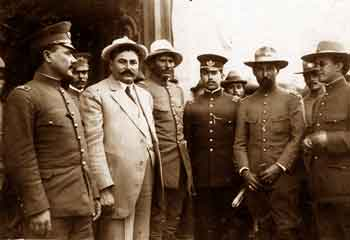
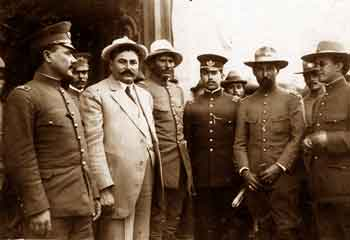

Todos los mexicanos saben cuando inició la Revolución Mexicana, (20 de noviembre de 1910) pero pocos saben cuando concluyó, si es que ha concluido, pues a partir del asesinato de Francisco I Madero, el 22 de febrero de 1913, se desataron conflictos armados durante casi 20 años por el poder político en México entre las facciones revolucionarias, que originaron los asesinatos de Emiliano Zapata el 10 de abril de 1919; de Venustiano Carranza el 21 de mayo de 1920; de Francisco Villa el 20 de julio de 1923 y de Álvaro Obregón el 17 de julio de 1928.
Los historiadores dividen al movimiento revolucionario de México en 4 etapas:
- La Primera Etapa 1910-1911 con el movimiento maderista para derrocar a Porfirio Díaz que tenía 30 años en el poder presidencial.
- La Segunda etapa (1911-1913) cuando Francisco I Madero asume el poder y ordena el desarme de las tropas de Emiliano Zapata y Pascual Orozco quienes consideran a Madero un traidor porque no cumple con la entrega de tierras a campesinos.
- La Tercera etapa 1913-1917, conocida como La Decena Trágica, cuando una facción del ejército comandada por Victoriano Huerta, se levanta en armas contra Madero. Huerta asume el poder, disuelve el Congreso de la Unión y arresta a diputados y senadores a los que considera enemigos.
- Y la Cuarta etapa 1914-1917 cuando Victoriano Huerta huye del país y se desata una guerra entre convencionistas revolucionarios y constitucionalistas y culmina con la creación de la Constitución de 1917.
Y decíamos al principio que hay discrepancia de opiniones, respecto a la fecha de culminación de la Revolución Mexicana, porque unos señalan que fue el 5 de febrero de 1917 con la proclamación de la Constitución Política Mexicana.
Otros mencionan que acabó en 1920, con la asunción a la presidencia de la República de Adolfo de la Huerta; y algunos señalan el año de 1924 con la presidencia de Plutarco Elías Calles.
Pero, otros historiadores consideran el año de 1940 como la culminación de la Revolución Mexicana. con la etapa llamada El Maximato, bajó el dominio político de Calles.
Ahora bien, si el motivo del movimiento armado fue para que hubiera voto libre y no reelección, pues la Revolución ya cumplió su objetivo, digo yo.
Si el movimiento armado fue para que se repartieran tierras a los campesinos, pues la reforma Agraria ya se agotó, a tal grado que la secretaría que llevaba ese nombre ahora se llama suntuosamente Secretaría de Desarrollo Agrario, Territorial y Urbano con siglas SEDATU.
Y si la Revolución Mexicana se hizo para crear instituciones políticas que permitieran la participación ciudadana con libertad para votar y ser votados, pues ya existen un sinnúmero de partidos políticos que participan en elecciones locales, estatales y federales.
Y si la lucha armada duró casi 20 años para instaurar un desarrollo social y económico que permitiera mejores condiciones de vida para los mexicanos, pues ahí están las estadísticas que usted, curioso radioescucha, puede comparar para verificar que hoy tiene escuelas, universidades, hospitales o vías de comunicación diferentes a las del siglo pasado.
Ahora que si el movimiento armado fue una lucha por el poder presidencial, ahí si no le podemos asegurar si la Revolución Mexicana ha concluido, pues apenas el 23 de marzo de 1994 asesinaron a Luis Donaldo Colosio, quien era candidato del PRI a la presidencia de la República.
Sea lo que sea, revolucionario radioescucha, lo cierto es que mañana se conmemoran 103 años de nuestra Revolución Mexicana. Y todavía algunos dudan de que haya concluido.


 
